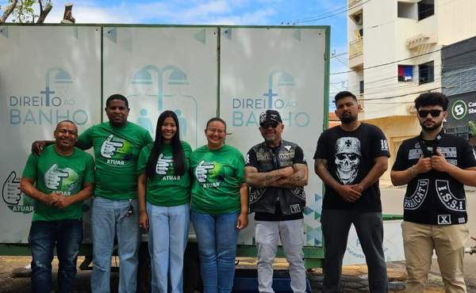
01
Direito ao Banho
Banho quente, roupas limpas e itens de higiene — um momento de cuidado que restitui a dignidade e devolve a autoestima.
AtivoAssistência social, acolhimento e dignidade para pessoas em situação de rua. Mais do que ajuda material — um olhar que devolve a esperança.
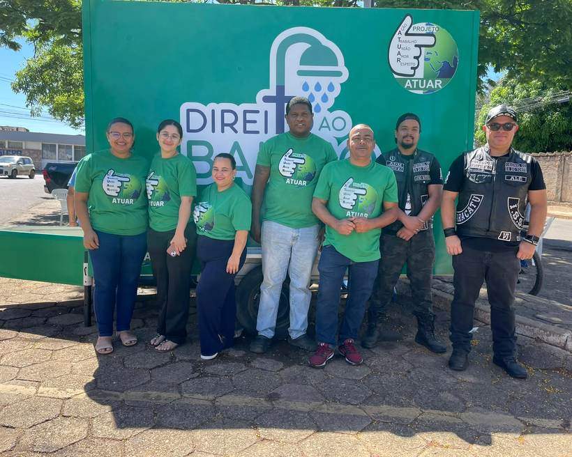
Cuidar do próximo é a essência do Projeto Atuar Semeando Amor. Mais do que higiene, entregamos um momento de carinho que devolve a esperança a quem vive nas ruas, criando um ambiente de afeto onde cada pessoa se sente vista, respeitada e motivada a recomeçar.
Preparamos com carinho banhos quentes, roupas limpas e itens de higiene para todos os atendidos. Nossa meta é abraçar os cidadãos com sensibilidade, plantando sementes de confiança que abrem caminhos para uma vida nova — com muito mais saúde, proteção social e bem-estar para o coração.
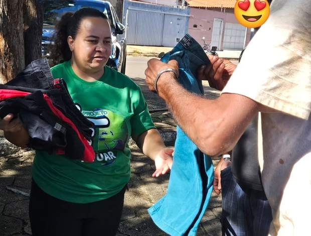
Entrega de roupas durante uma ação do projeto em Paracatu.
Presença constante nas ruas, onde a necessidade é real.
Capacitação e oficinas que abrem portas para a autonomia.
Voluntários, parceiros e poder público atuando juntos.
Acolhimento sem julgamento, do primeiro contato ao recomeço.
Cada pessoa tratada como cidadã de direitos, sempre.
Frentes voltadas ao acolhimento, à garantia de direitos e à reinserção social de pessoas em situação de rua.

Banho quente, roupas limpas e itens de higiene — um momento de cuidado que restitui a dignidade e devolve a autoestima.
Ativo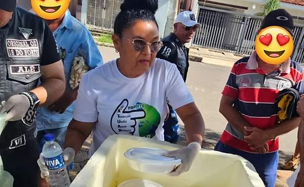
Garantimos acesso a refeições balanceadas e a programas de nutrição para prevenir deficiências e promover bem-estar físico.
Ativo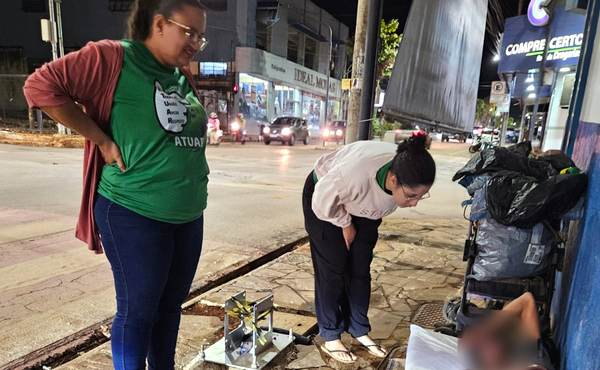
A equipe percorre pontos estratégicos de Paracatu para identificar, acolher e oferecer suporte a quem passa a noite nas ruas.
Ativo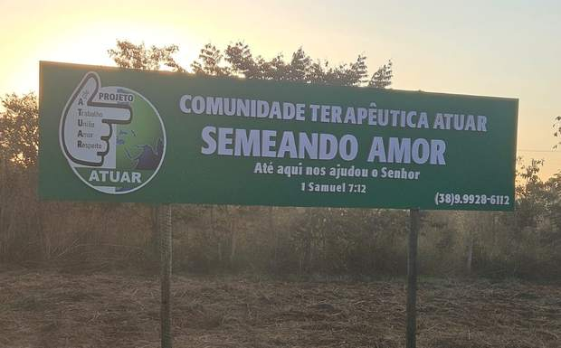
Um espaço dedicado ao acolhimento e à reinserção social, focado na recuperação plena de cidadãos vulneráveis. O terreno já tem placa instalada e as primeiras obras em andamento.
Em obras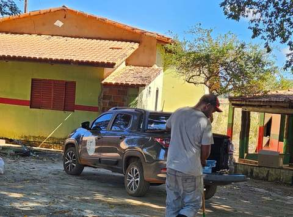
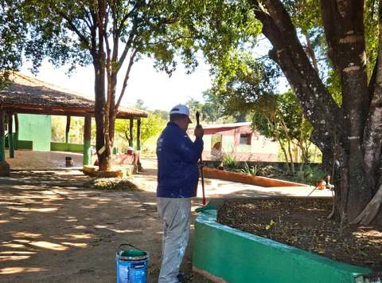
Registros das ações do Atuar em Paracatu.
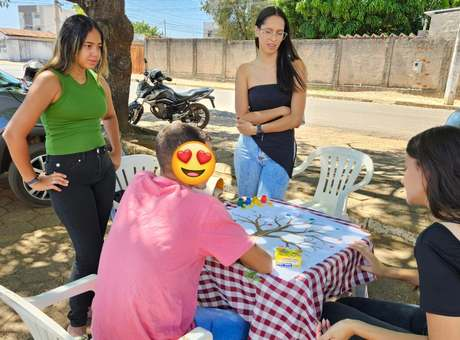
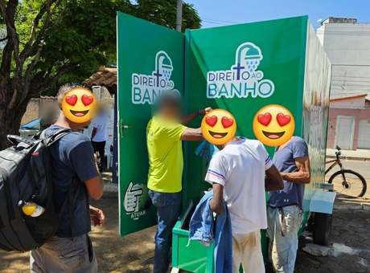
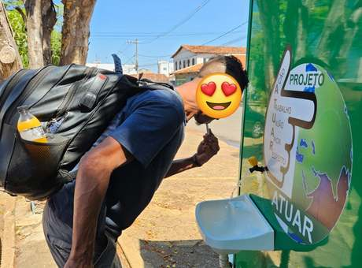
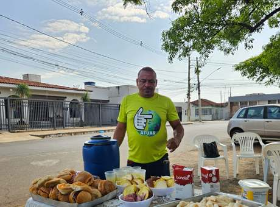
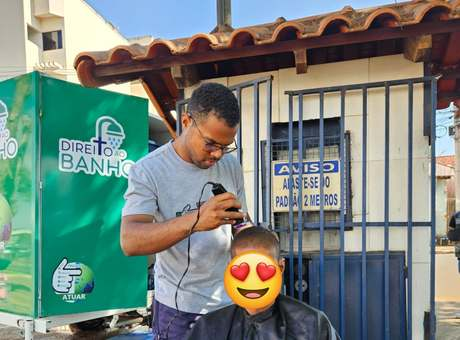
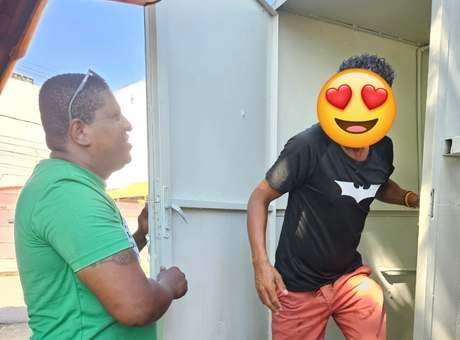
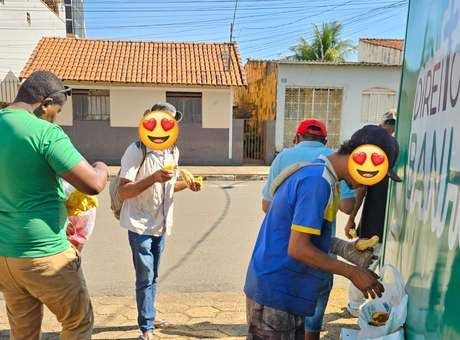
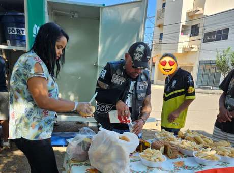
As ações mais recentes do Projeto Atuar Semeando Amor nas ruas de Paracatu.
Quer ser voluntário, doar itens ou levar o projeto para a sua comunidade? Chame a gente.
Sua colaboração é fundamental para continuarmos acolhendo quem mais precisa. Você pode atuar como voluntário, tornar-se parceiro ou doar — cada gesto vira um recomeço.